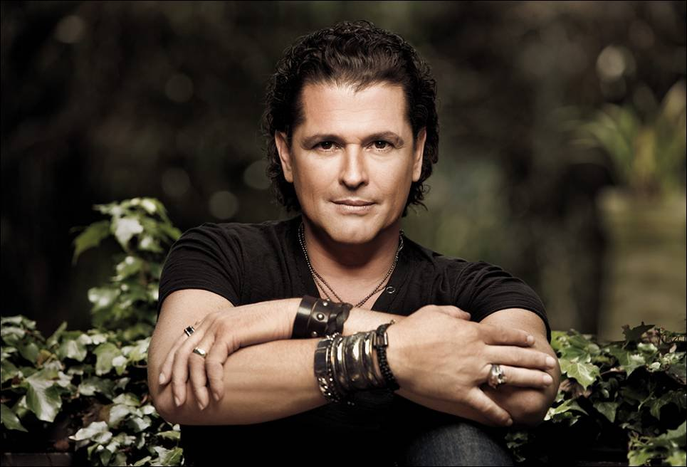

Before he graduated from Jorge Tadeo Lozano University with a publicist degree, singer/songwriter Carlos Vives joined different bands and participated in several plays. In 1982, the artist got a role in the Colombian TV series Tiempo Sin Huella, starting his successful acting career, later extending his professional skills to Puerto Rican television. After forming a band called La Provincia, the singer and guitarist began performing a local style known as vallenato, successfully touring his native country and South America. In 1994, "La Gota Fria" became his first smash, climbing on the most important music charts around Latin America.
In 1996, under the slogan of Unete a los Locales (Join the Local Ones), the talented musician created his own label, called Gaira, to promote and give an incentive to local artists, though he continued to record for EMI. In 1998 he joined fellow top-tier Colombian stars Shakira and Charlie Zaa on-stage during a benefit for victims of an earthquake that destroyed Colombian coffee fields. Vives issued the smash El Amor de Mi Tierra in 1999; in 2000 it received a Grammy nomination for Best Latin Album.
Released in 2001, Déjame Entrar won the artist his first Grammy for Best Traditional Tropical Latin Album. He shifted directions for 2004's En Rock de Mi Pueblo, which added a healthy dose of rock & roll and rap to his vallenato grooves. This album received a Grammy nomination in 2005. Vives and EMI fell into a contract dispute after the recording was released and he didn't record again for five years. Clásicos de la Provincia II, issued in 2009, was a collection of early vallenato and traditional songs and only released in Colombia through a supermarket chain.
In 2012 he resurfaced as a coach for the the Colombian version of The Voice. His contract difficulties behind him, he signed with Sony and the single "Volví a Nacer" was issued in the fall of 2012. It entered several international charts at number one. It was followed in January 2013 by the release of the album Corazón Profundo, which also reached the top spot. He followed it with a second hit single, "Como le Gusta a Tu Cuerpo" (featuring Michel Teló) and commenced touring
While on the road, Vives continued to record. Más Corazón Profundo appeared in 2014. It featured new songs (including duets with Choc Quib Town and Marc Anthony) as well as extended mixes of singles and "Volví a Nacer." In the summer of 2015, he released an audio/video document entitled Más + Corazón Profundo Tour: En Vivo Desde la Bahiá de Santa Marta. In 2017, Vives returned with his 15th studio album, Vives, which included the single "La Bicicleta," featuring Shakira. The single peaked at number two on the Hot Latin Songs chart while the full-length took the same spot on the Top Latin Albums list.
Lo Nuestro Award for Tropical Artist of the Year
Lo Nuestro Award for Song of the Year
Latin Song of the Year Award
Premio lo Nuestro a la Excelencia
Latin Grammy Award for Recording of the Year
Latin Grammy Award for Best Tropical Song
La Bicicleta
El Mar de Tus Ojos
Cuando Nos Volvamos a Encontrar
Volvi a Nacer
Bailar Contigo
Fruta Fresca
Volvi a Nacer
Dejame Entrar
Como Tu
Luna Nueva